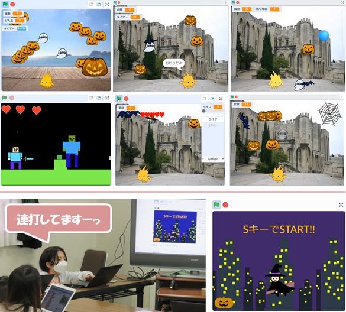

今回はみんなで「変数とタイマー」の体験会。「変数」を使ってカボチャのジャックを捕まえたら得点をプラス１するプログラムに改造する。そして大人メンターも実はあまり知らない「タイマー」を使って30秒で何個のカボチャを捕まえられるかプログラム作り。
引き続きオンライン参加がメインですが、PC操作に不慣れもしくは対面ワークショップを希望のご家族向けに会場も併設。
ニンジャ８名（会場4, オンライン4）と高校/大学から社会人までメンター6名（会場4, オンライン2）が参加してくれました。
プログラムの高度化に欠かせない変数についてみんなで勉強します。まずは得点を１個作った後、自由に作ってもらったら減点数やLIFE💛💛💛などの工夫をしてくれました。タイマーを使って30秒経過したらゲーム終了という仕組みが意外と難しかったようです。
メンターが作ったプログラムをみんなでリミックスして、ここに変数とタイマーを追加します。
早く出来ちゃったベテランニンジャには次のアイディア集も見てもらいました。
予定では20分くらい試してみて、次のワークショップ本編に入ろうと思ったのですが、「変数の活用」や「タイマーを使って30秒経過したら」というロジック作りが上手くいかない様子で、子どもたちが一生懸命たくさん考えていたので、そのままワークショップの時間を使って継続することにしました。何かひとつの命令ブロックをテーマに考えるというのも良かったかと思います。
今日も「最初に発表したいひと～？」と言うより早く、ニンジャが素早く手をあげてくれました。リミックスした作品は個性ある改造をしてくれるので、同じ作品が無いのがスゴイ。透明なおばけ、パワーアップする玉、大きなランターン、ライフ、そしてゾンビも登場。子どもたちの発表もシンプルに分かりやすくて聞いていて勉強になります。そして、みんなには伝わりにくい連打、連打、連打の必死な操作パフォーマンスもしてくれたメンターは、ハロウィーン風な魔女の連打ゲームを発表してくれました。

はじめての集会場開催とオンラインの併用でした。オンライン側と会場との一体感を作り出したい試みはこれからも考えていきます。